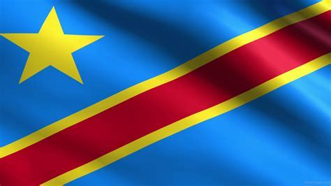

la plupart de fois l'une des questions que beaucoup de gens me demandent c'est: "tes de quel origine toi?", et pour y repondre ça été toujours facile. Bien aue je suis né en RDC; mes parents sont tout les deux senegalais et se sont imigrés au Congo pour leur commerce, j'adore les deux pays malgre que je n;ai jamais encore mis les pieds ausenegal, mais je l'espere bientot un jour tres prochainement.
mes deux parents sont tout les deux senegalais et surtout ils portent a eux deux le meme nom de famille et ils viennent d'un meme village
et malgre que je vis une double culture le deux pays restent tous dans mon coeur et j'espere que ca le restera a jamais
bien que ce sont deux pays du meme continent,les differences au niveau de mode de vie et de la culture ne manquent jamais, et pour l'expliquer veuillez voir ce tableau ci-dessous :
|
 |
| pays muslim | pays laic |
| un pays reconnu avec une bonne image et ses diversite naturel | un pays souvent reconnu avec une image de l'art |
| vie moins cher mais difficile de gagner de l'argent | vie cher en mee temps gagner de l'argent est plus facile |
| ma famille restreinte s'y trouve | ma famille elargie s'y trouve |
| pour ma nationalite actuel j'utilise le passeport congolais | |